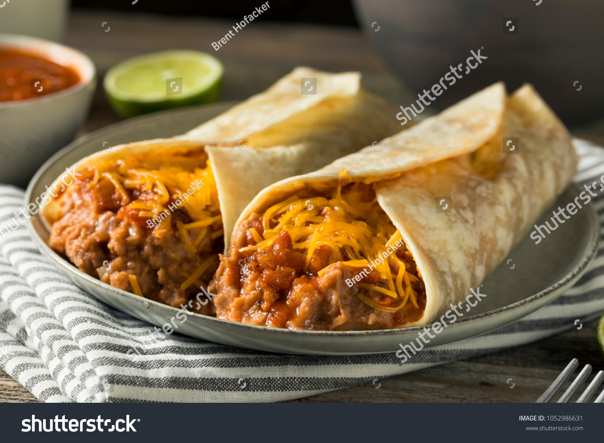

Home Page
Bean and Cheese Burrito

Description
A bean and cheese burrito is a simple yet satisfying Mexican-inspired dish consisting of a soft flour tortilla
filled with seasoned beans and melted cheese. The beans, typically refried or black beans, are seasoned with spices
like cumin, garlic, and chili powder for extra flavor. The cheese, often cheddar or a Mexican blend, adds a creamy, gooey
texture. The burrito is usually folded and can be served as-is or lightly grilled for a crispy exterior. It’s often paired
with salsa, guacamole, or sour cream for extra flavor.
Ingredients
- 1 cup refried beans (or black beans, mashed)
- 0.5 tsp cumin
- 0.5 tsp chili powder
- 0.25 tsp garlic powder
- Salt and pepper, to taste
- 0.5 cup shredded cheddar cheese (or a Mexican blend)
- 2 large flour tortillas
- 1 tbsp butter or oil (optional, for crisping)
Steps
- Prepare the beans: If using canned refried beans, warm them in a small pan over medium heat. Stir in cumin, chili powder, garlic powder, salt, and pepper to taste. If the beans are too thick, add a splash of water to loosen them up.
- Assemble the burrito: Lay a tortilla flat on a clean surface. Spread half of the warm beans onto the center of the tortilla. Sprinkle a generous amount of shredded cheese on top.
- Fold the burrito: Fold in the sides of the tortilla, then roll it up tightly from the bottom to form a burrito.
- Crisp the burrito (optional): Heat a pan over medium heat and add a little butter or oil. Place the burrito seam-side down and cook for 1-2 minutes per side until golden and crispy.
- Serve: Enjoy as-is or with salsa, guacamole, or hot sauce on the side!
Home Page